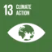
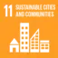

Prototype-Routed Exponential-Gated Residual Learning for Multi-Horizon Regional Electricity-Load Forecasting
Computers and Electrical Engineering
Izaz Ul Haq, Fang Liu, Denis Sidorov, Jiran Zhu, Suzhen Huang, Laeeq Aslam
Physics-Informed Multi-Gated Convolutional Recurrent Network for Extreme Wind Speed Prediction
Applied Energy
Laeeq Aslam, Runmin Zou, Yaohui Huang, Gang Li, Fatima Yaqoob, Sara Mouafik, Saad Yousaf

Climate Action (SDG 13)M²FMoE: Multi-Resolution Multi-View Frequency Mixture-of-Experts for Extreme-Adaptive Time Series Forecasting
AAAI Conference on Artificial Intelligence (AAAI)
Yaohui Huang, Runmin Zou, Yun Wang, Laeeq Aslam, Ruipeng Dong
Regime-Conditioned Horizon-Aware Mixture-of-Experts for Spatio-Temporal Wind Forecasting
IEEE Access
Bowen Zou, Ming Li, and Laeeq Aslam
Physics-Informed Ensemble Learning for City-Center Grid Cell Temperature Prediction During Thermal Extremes
Urban Climate
Laeeq Aslam, Runmin Zou, Gang Li, Ebrahim Shahzad Awan, Sara Mouafik

Sustainable Cities and Communities (SDG 11) Climate Action (SDG 13)Physics-Informed Spatio-Temporal Network with Trainable Adaptive Feature Selection for Short-Term Wind Speed Prediction
Computers & Electrical Engineering
Laeeq Aslam, Runmin Zou, Yaohui Huang, Ebrahim Shahzad Awan, Sharjeel Abid Butt, and Qian Zhou
A Shallow Hybrid Model with Dynamic Bayesian Optimisation for Wind Speed Prediction on Memory-Constrained Devices
Computers & Electrical Engineering
Laeeq Aslam, Runmin Zou, Yaohui Huang, Fatima Yaqoob, Sharjeel Abid Butt, and Qian Zhou
Dynamic Optimization of Recurrent Networks for Wind Prediction on Edge Devices
IEEE Access
Laeeq Aslam, Runmin Zou, Ebrahim Shahzad Awan, Sayyed Shahid Hussain, Muhammad Asim, and Samia Allaoua Chelloug
Hardware-Centric Exploration of the Discrete Design Space in Transformer–LSTM Models for Wind Speed Prediction on Memory-Constrained Devices
Energies
Laeeq Aslam, Runmin Zou, Ebrahim Shahzad Awan, Sayyed Shahid Hussain, Kashish Ara Shakil, Mudasir Ahmad Wani, and Muhammad Asim
A New Paradigm for Improved Image Steganography by Using Adaptive Number of Dominant Discrete Cosine Transform Coefficients
Preprint
Laeeq Aslam Sandhu, Ebrahim Shahzad, Fatima Yaqoob, Sharjeel Abid Butt, Wasim Khan, and I. M. Qureshi
Enhanced Glacier Segmentation Using Physics-Informed Cascaded Swin-UNet (PICSw-UNet) Model
Preprints.org
Muhammad Y.S. Dasti, Fatima Yaqoob, Laeeq Aslam, Yushan Zhou, Akram Syed, and Yunsheng Zhang
Integrating Physics-Informed Vectors for Improved Wind Speed Forecasting with Neural Networks
Asian Control Conference (ASCC)
Laeeq Aslam, Runmin Zou, Ebrahim Awan, and Sharjeel Abid Butt
Towards Efficient SOH Estimation for Lithium-ion Batteries via Structural Re-parameterization
IEEE Conference on Energy Internet and Energy System Integration (EI2)
Qian Zhou, Yun Wang, Guang Wu, and Laeeq Aslam
Exploring New Frontiers in Facial Expression Recognition: Dual DenseNet-201 and Landmark Distance Analytics in the Wild
IEEE Conference on Data Driven Control and Learning Systems (DDCLS)
Abdullahi Mohamed Hassan, Laeeq Aslam, and others
Novel Image Steganography Based on Preprocessing of Secrete Messages to Attain Enhanced Data Security and Improved Payload Capacity
Traitement du Signal
Laeeq Aslam*, Ahmad Saeed, Ijaz Mansoor Qureshi, Muhammad Amir, and Waseem Khan
A New Computing Paradigm for Off-Grid Direction of Arrival Estimation Using Compressive Sensing
Wireless Communications and Mobile Computing
Hamid Ali Mirza, Laeeq Aslam, Muhammad Asif Zahoor Raja, Naveed Ishtiaq Chaudhary, Ijaz Mansoor Qureshi, and Aqdas Naveed Malik
Effect of Faulty Sensors on Estimation of Direction of Arrival and Other Parameters
Journal of Mechanics of Continua and Mathematical Sciences
Laeeq Aslam, Fawad Ahmad, Sohail Akhtar, Ebrahim Shahzad Awan, and Fatima Yaqoob
Compressed Sensing Based Image Steganography System for Secure Transmission of Audio Message with Enhanced Security
International Journal of Computer Science and Network Security (IJCSNS)
Muhammad Zaheer, I. M. Qureshi, Zeeshan Muzaffar, and Laeeq Aslam